Mi Rutina de Ejercicio Semanal
Calentamiento 5 a 10 min
 Calentamiento (10min)
Calentamiento (10min)
Antes de cada serie, trota 15 min o salta la cuerda 10 min a un ritmo moderado
Lunes: Todo el Cuerpo
- 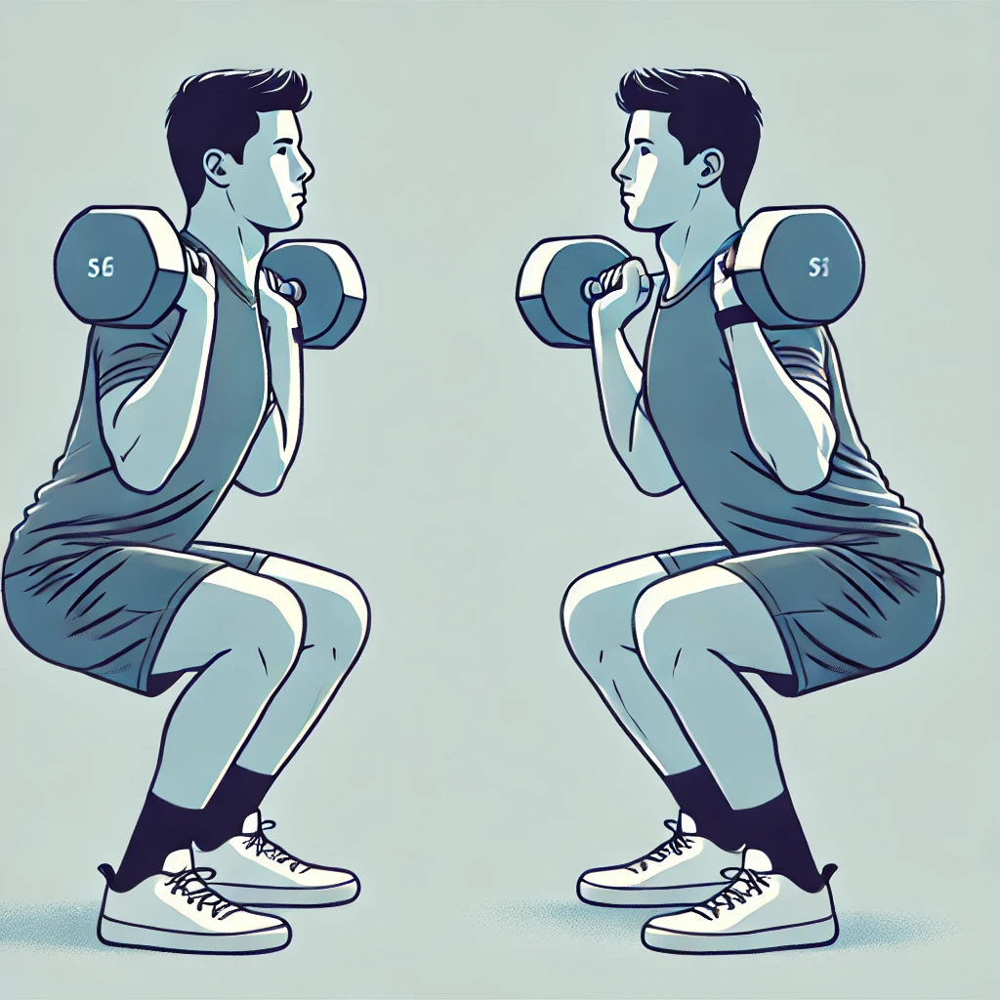Sentadillas con mancuernas (10-12 repeticiones)
- 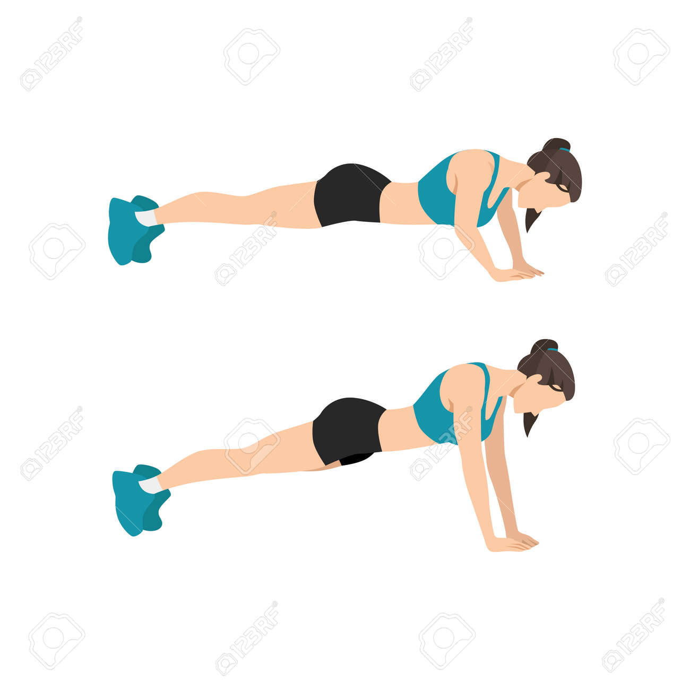Flexiones (12-15 repeticiones)
 Peso muerto con mancuernas (12-15 repeticiones)
Peso muerto con mancuernas (12-15 repeticiones)- 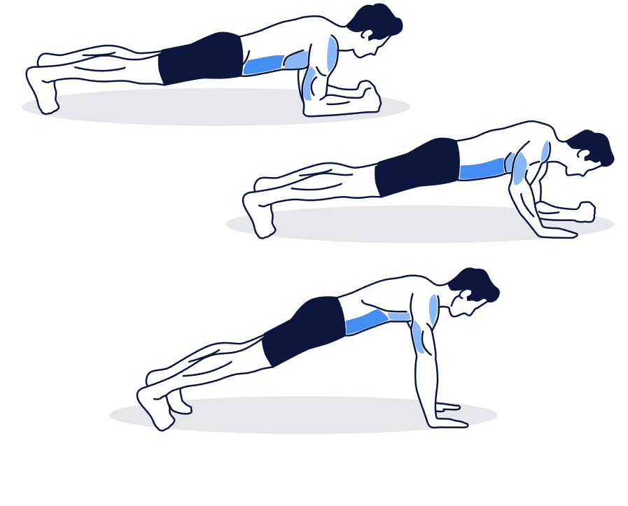Plancha (30 seg)
- 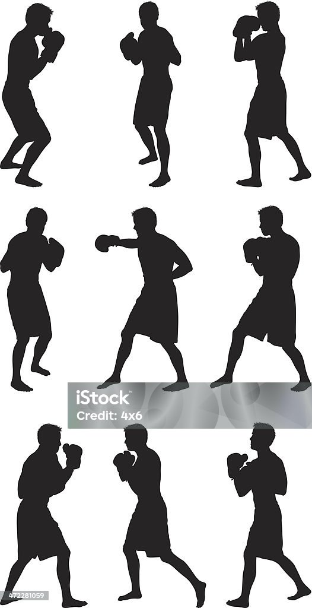Sombra de boxeo (1 minuto)
 Jumping Jacks (30 seg)
Jumping Jacks (30 seg)
Estiramiento suave 10 min
- 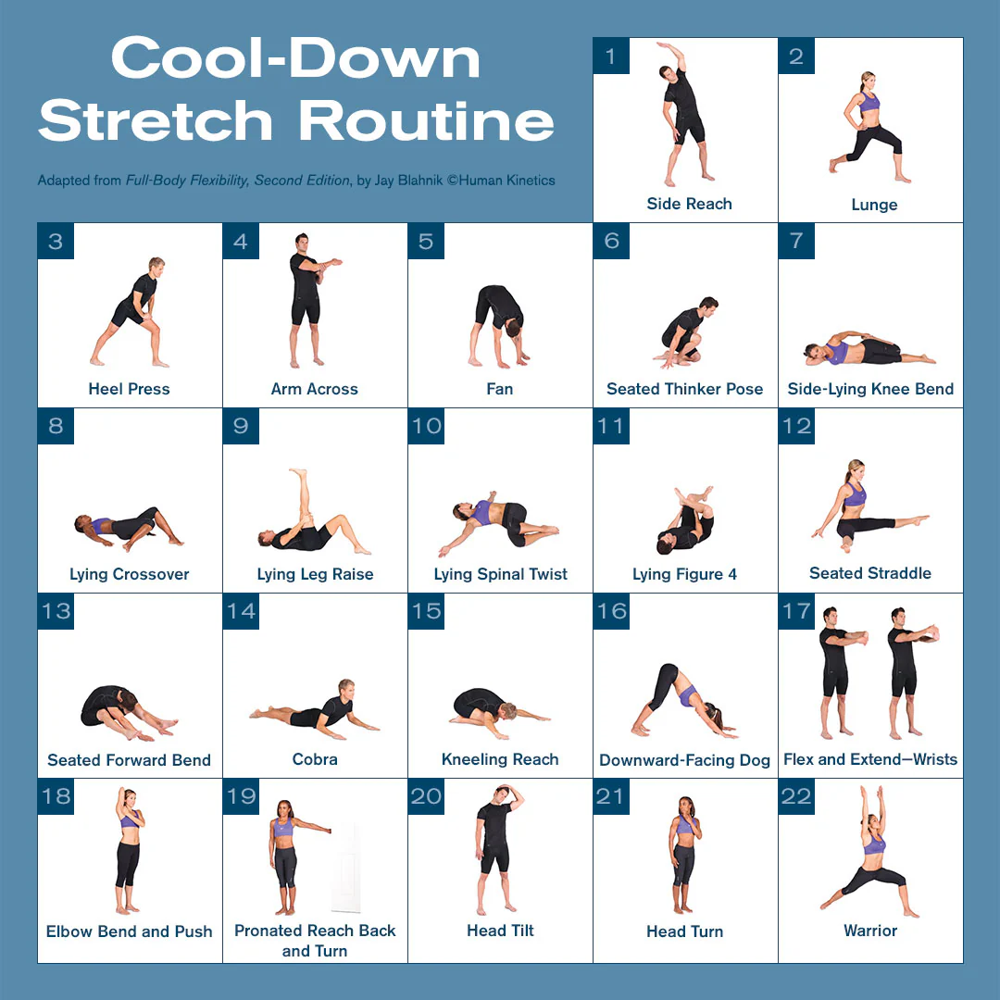Estiramiento después de rutina
Calentamiento 5 a 10 min
- Calentamiento (10min)
Antes de cada serie, trota 15 min o salta la cuerda 10 min a un ritmo moderado
Martes: Fuerza
- Sentadillas con mancuernas (8-12 repeticiones)
 Prensa de hombros con mancuernas (8-12 repeticiones)
Prensa de hombros con mancuernas (8-12 repeticiones)- 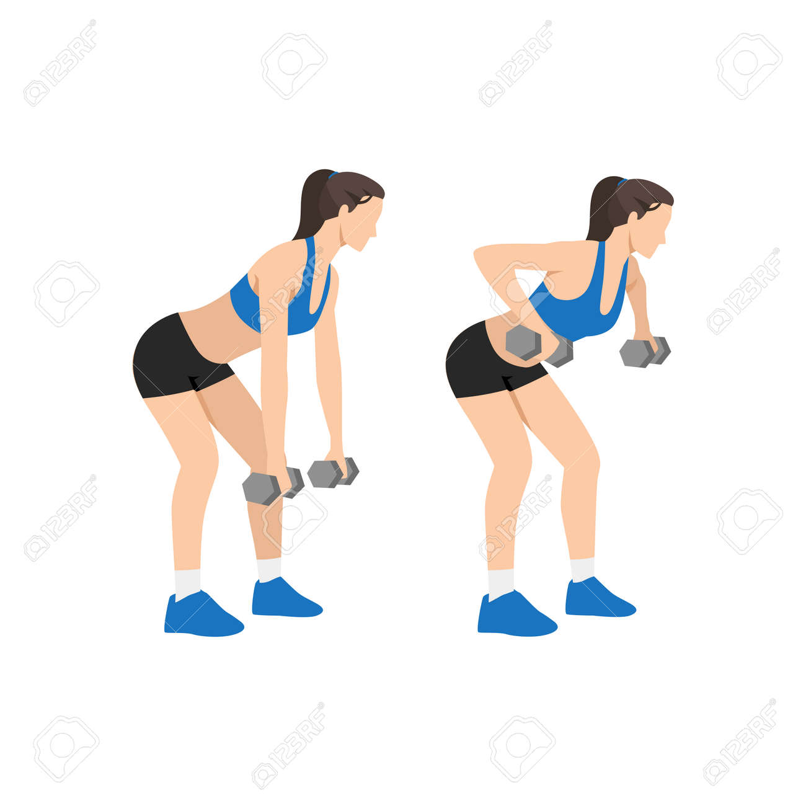Remo con mancuernas (8-12 repeticiones)
- Push-ups (8-12 repeticiones)
- 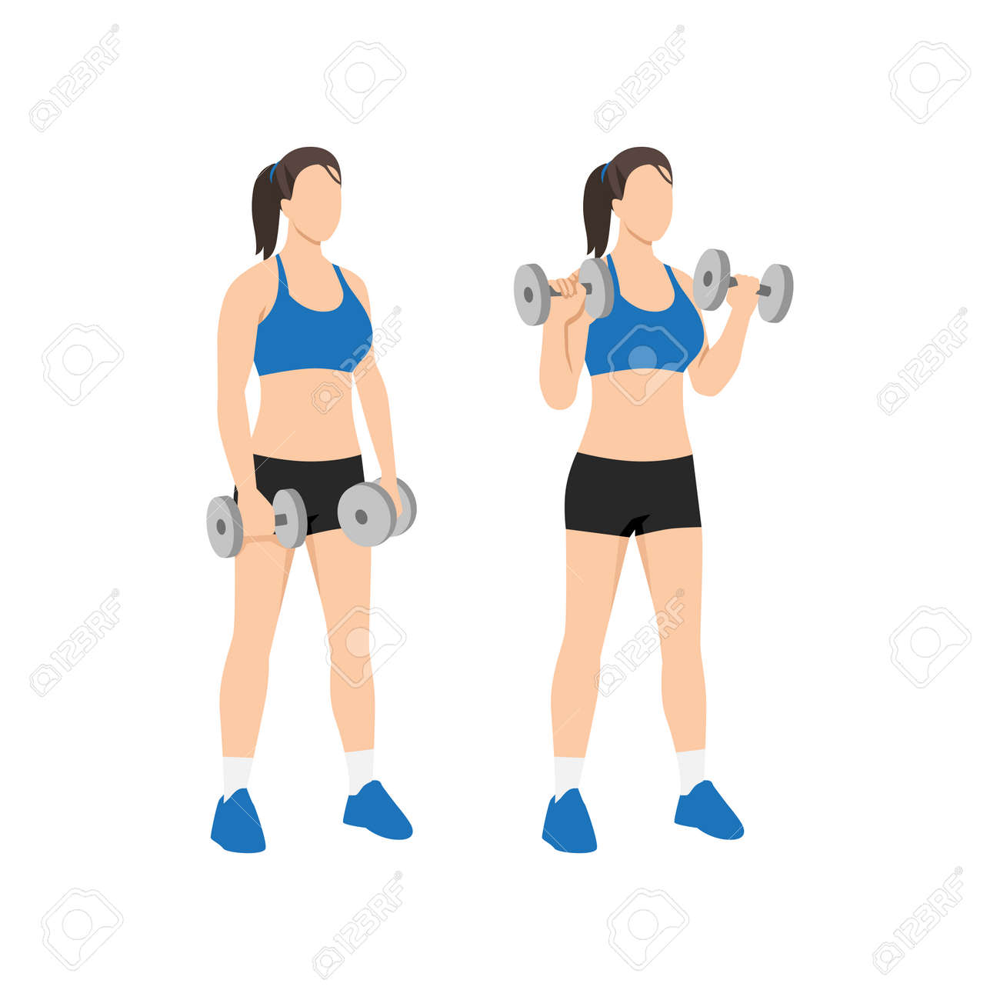Curl de bíceps con mancuernas (8-12 repeticiones)
Estiramiento suave 10 min
- Estiramiento después de rutina
Calentamiento 5 a 10 min
- Calentamiento (10min)
Antes de cada serie, trota 15 min o salta la cuerda 10 min a un ritmo moderado
Miércoles: Abdomen y Piernas
- 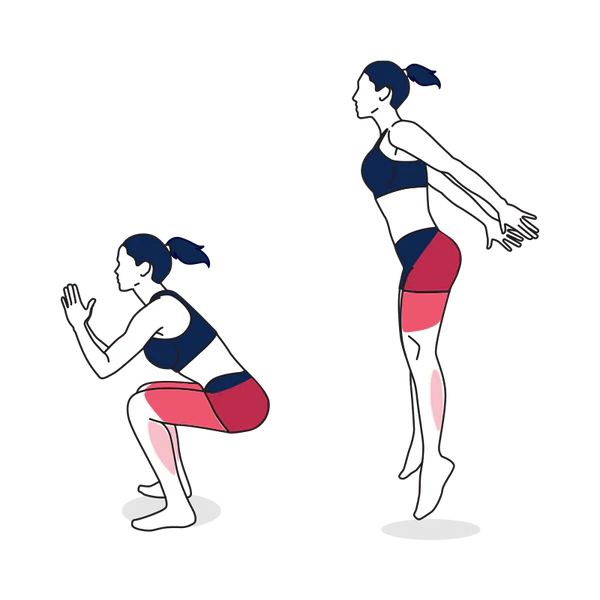Sentadillas con salto (15 repeticiones)
- 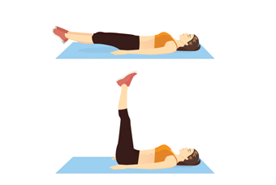Elevación de piernas (15 repeticiones)
 Crunches (20 repeticiones)
Crunches (20 repeticiones)- 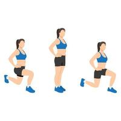Lunges (12 repeticiones por pierna)
- Planchas (30 seg)
- 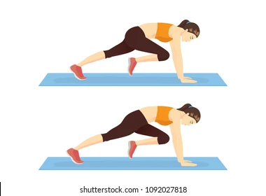Mountain Climbers (30 seg)
Estiramiento suave 10 min
- Estiramiento después de rutina
Calentamiento 5 a 10 min
- Calentamiento (10min)
Antes de cada serie, trota 15 min o salta la cuerda 10 min a un ritmo moderado
Jueves: Brazos y Espalda
- Flexiones de tríceps (8-12 repeticiones)
- 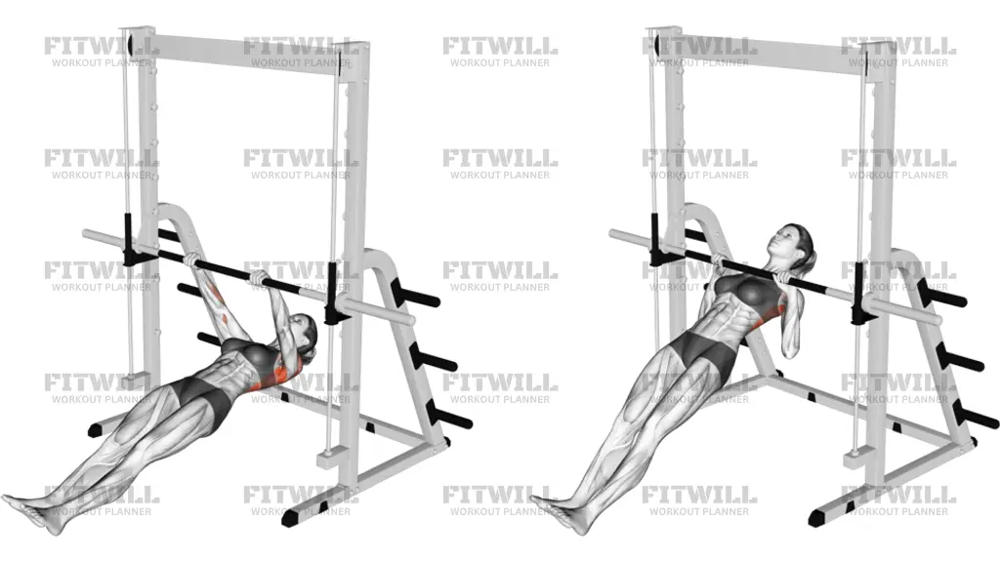Remo invertido (10-12 repeticiones)
 Fondos de tríceps (12-15 repeticiones)
Fondos de tríceps (12-15 repeticiones) Push-ups (15 repeticiones)
Push-ups (15 repeticiones)
Estiramiento suave 10 min
- Estiramiento después de rutina
Calentamiento 5 a 10 min
- Calentamiento (10min)
Antes de cada serie, trota 15 min o salta la cuerda 10 min a un ritmo moderado
Viernes: Piernas y Glúteos
 Sentadilla frontal (12 repeticiones)
Sentadilla frontal (12 repeticiones) Step-ups (12 repeticiones por pierna)
Step-ups (12 repeticiones por pierna) Bulgarian Split Squat (12 repeticiones por pierna)
Bulgarian Split Squat (12 repeticiones por pierna) Glute bridge (15 repeticiones)
Glute bridge (15 repeticiones) Pelvic tilt (15 repeticiones)
Pelvic tilt (15 repeticiones)
Estiramiento suave 10 min
- Estiramiento después de rutina